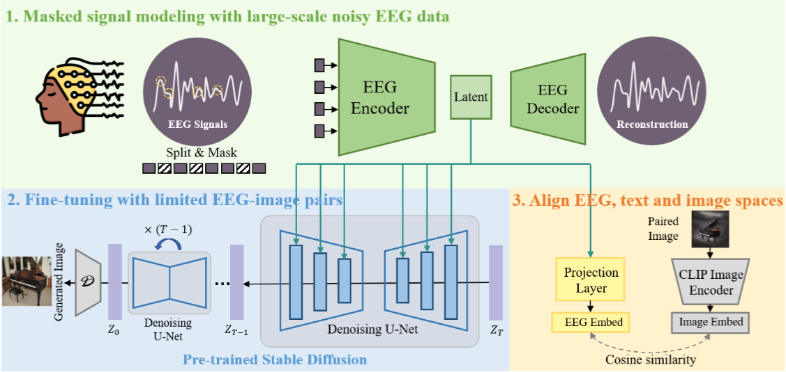

Literature Review: DreamDiffusion – Generating High-Quality Images from EEG Signals
DreamDiffusion proposes a method to generate images directly from EEG signals without intermediate text prompts. Instead of requiring invasive or expensive methods like fMRI, this work leverages EEG as a low-cost and portable signal source. The method integrates temporal masked signal modeling, CLIP-based alignment, and Stable Diffusion to reconstruct plausible images aligned with brain activity.
Key Insights
-
EEG as a viable input for generative models
EEG data is inherently noisy, low in spatial resolution, and subject to high individual variability. DreamDiffusion tackles this by using temporal masked signal modeling (MSM) to pre-train an encoder, effectively extracting more stable representations from noisy EEG sequences. -
Alignment across modalities
A core challenge is that EEG embeddings exist in a space very different from text and image embeddings. The authors leverage CLIP’s image encoder to align EEG embeddings with both image and text embeddings, enabling them to condition Stable Diffusion effectively. This step goes beyond naïve end-to-end training with limited EEG-image pairs. -
Quantitative and qualitative validation
The model’s success is not just in producing “prettier” pictures, but in achieving higher semantic alignment than prior EEG-to-image works like Brain2Image. Ablation studies highlight the necessity of both MSM pre-training and CLIP-based alignment.

Figure: DreamDiffusion pipeline. EEG signals are encoded with masked signal modeling, aligned with CLIP embeddings, and used to condition Stable Diffusion via cross-attention.
Example
In experiments with the ImageNet-EEG dataset, subjects were shown categories like “airliner,” “panda,” or “jack-o-lantern” while EEG was recorded. DreamDiffusion generated images conditioned on the EEG embeddings. Compared to Brain2Image, the outputs not only looked sharper but also better captured the intended object category, such as producing a plane-like image instead of an unrecognizable blur.
Ratings
Novelty: 4/5
The work extends existing EEG-to-image pipelines by combining temporal masked signal modeling with CLIP-guided alignment. While not the first to attempt thought-to-image, the technical integration with diffusion models is a step forward.
Clarity: 3/5
The overall idea is understandable, but the paper is heavy with equations and symbols without consistent notation. The methodology could be explained more intuitively for broader accessibility.
Personal Comments
The premise of “thoughts-to-images” was something I honestly didn’t expect to exist, atleast not to this quality. Historically, the trajectory resembles how speech recognition advanced: starting from noisy correlations, then gradually refining feature representations until semantic decoding became viable. Similarly, EEG-to-image may mature into tools for assistive technologies or artistic creation. Earlier works focused on fMRI due to richer spatial resolution, but that limited scalability. EEG, despite its noisiness, democratizes access to brain-signal-driven generation. DreamDiffusion’s key innovation is not in inventing new architectures, but in bridging modalities: aligning weak EEG signals with robust CLIP embeddings and diffusion priors.
However, one concern is overinterpretation. The reconstructions reflect correlations between stimulus-evoked EEG and categories, not a window into spontaneous “thoughts.” At present, the model relies on EEG-image pairs from controlled experiments rather than free imagination. Future work must tackle how to generalize beyond simple category-level mappings.
Enjoy Reading This Article?
Here are some more articles you might like to read next: